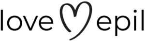

Trade Mark Journal No.2025/025 20 June 2025
WO0000001846473 (44)
Office of origin: Ukraine
Date of International Registration:10 December 2024
Date of designation in the UK:
10 December 2024

The mark is a composite mark. The central position in the composition of the mark is occupied by a stylized image of a heart, to the left of which is the inscription "love" and to the right - the inscription "epil". The verbal elements of the mark are executed in Latin, lowercase letters of the alphabet, in a special straight, thin sans serif font.
International priority date claimed: 19 November 2024
(Ukraine)
- Class 44
- Aesthetician services of laser therapy for the treatment of diseases; aesthetician services, namely: hygienic and cosmetic services for people; beauty salon services, namely: bio-epilation, laser hair removal, massage, manicuring, pedicuring, shugaring; body piercing; cosmetic laser removal of excess hair; cosmetic laser skin treatment; cosmetic laser removal of varicose veins; depilatory waxing; hairdressing; hair dyeing services / hair colouring services / hair coloring services; laser cosmetic vascular treatment; laser hair removal services; laser removal of spider veins (aesthetician services); laser skin rejuvenation services; laser skin tightening services; laser tattoo removal (aesthetician services); removal of toenail fungus by laser (aesthetician services); solarium services.
KUNYTSKYY Yuryy
Representative: BONDARENKO Dmytro Hennadiiovych, vul. Heroiv Polku «Azov», bud. 25-B, kv. 17, m. Kyiv 04210, UKRAINE